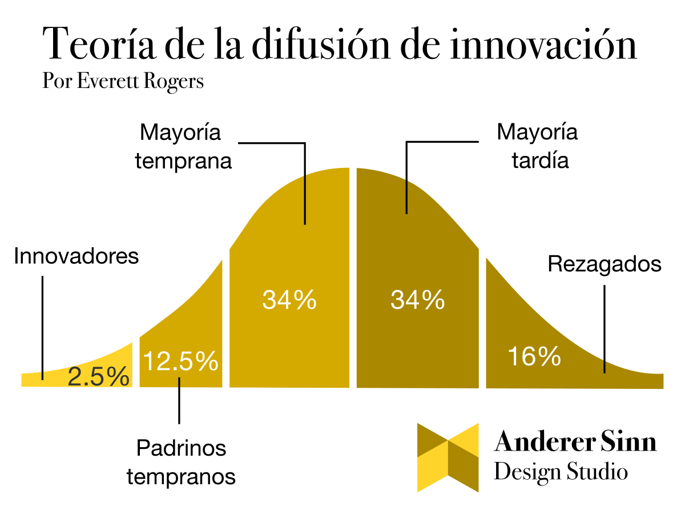
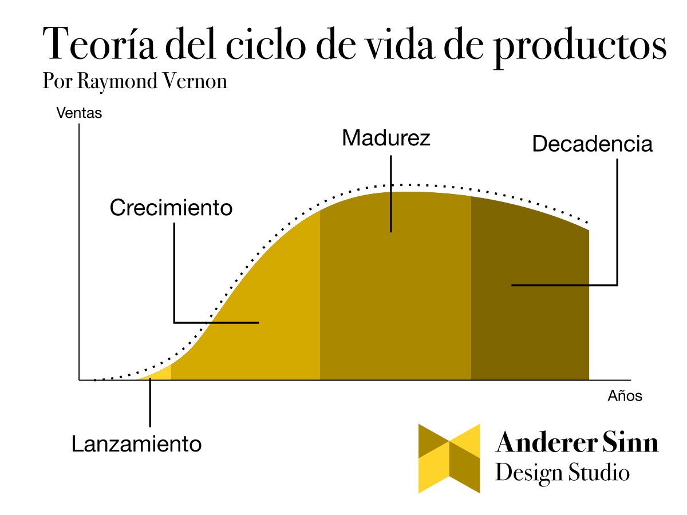

Un paso atrás para entender dos aspectos claves de la innovación
La innovación parece una idea caprichosa. Se muestra compleja de ejecutar e impredecible al adoptar. Además, entre los múltiples campos de aplicación y metodologías que existen es fácil entender a la innovación como un concepto abstracto y lleno de detalles.
En este artículo recupero dos modelos fundamentales para comprender los procesos de innovación en la sociedad. Damos un paso atrás y estudiamos el rol de la innovación en las organizaciones.
Con la lectura de este artículo, usted tendrá una comprensión más general que le permitirá agregar a sus proyectos de innovación una noción de propósito y comprensión sobre los procesos de adopción.
La primera curva indica que la población por lo general reacciona de manera distinta ante las innovaciones. Una persona se puede clasificar en una de estas cinco categorías. El mensaje fundamental es que una innovación se debe comunicar de forma distinta a cada grupo.

La menor cantidad de personas son innovadores. Estas son aventureras, por lo general jóvenes que prueban las innovaciones apenas salen.
Los padrinos tempranos (early adopters) son un grupo importante. Si bien están dispuestos/as a probar innovaciones, son personas observadoras y menos arriesgadas.
Cuando los padrinos tempranos comparten su experiencia de uso es cuando se cruza el umbral para la adopción masiva. A las personas que siguen este camino las llamamos mayoría temprana.
La mayoría tardía es mucho más conservadora. Estas personas no adoptan la innovación hasta no estar convencidas de que esa es la nueva forma de hacer las cosas.
Los rezagados (laggards) son personas mucho menos accesibles. Están acostumbradas a hacer las cosas de la manera antigua y muchos nunca adoptarán la innovación.
Es importante considerar dos cosas. Por una parte, para su adopción generalizada, una innovación debe transmitirse de grupo en grupo. En ocasiones, esta adopción ocurre en pocos años, y en otras nunca se logra.
Por otro lado, una variable determinante de la adopción masiva es la sincronía con la época (timing). Hay muchos ejemplos en la historia de innovaciones que llegaron muy temprano y no fueron adoptadas por manos de la empresa pionera. En el siguiente video, el profesor Bill Hammack cuenta la historia del teléfono con imagen desarrollado por Bell Systems. Precursor del concepto moderno de videollamada y del mismo internet, pero muy particular para ser compatible con su época.
¿Quiere aprender de cada grupo de consumidor?
En Anderer Sinn desarrollamos trabajo de campo para caracterizar la relación de los clientes con una propuesta de valor. Escríbanos.
2. Su etapa de crecimiento determina el objetivo de la innovación
El segundo modelo que nos da una idea de cómo funciona la innovación describe las etapas que un producto (o empresa) sigue en el mercado. El ciclo de vida de las empresas funciona de la siguiente manera:

En la introducción o lanzamiento ocurren las primeras ventas. Por lo general muy pocas para hacer sostenible la producción.
Algunas empresas logran llegar a una etapa de crecimiento donde el mercado adquiere de manera acelerada el producto.
La etapa de madurez se caracteriza porque las ventas se normalizan y el crecimiento ocurre de manera esperada comúnmente.
Al final, cuando el mercado pierde interés en la propuesta de valor o está cambiando, inicia la etapa de decadencia caracterizada por una reducción progresiva en las ventas.
Note que mientras más innovadora sea la propuesta de valor, más habrá que educar al mercado para empezar a usarla. Muchos emprendimientos nunca se levantan de la etapa de lanzamiento.
Este modelo nos brinda la posibilidad de identificar que es fundamental entender en qué etapa se encuentra su organización para poder innovar.
El profesor de Thales Teixeira de Harvard comenta en este podcast cómo muchos emprendimientos imitan las prácticas de innovación de las grandes corporaciones ignorando que se encuentran en etapas distintas.
Una estrategia de innovación para cada etapa
Así, si usted planea innovar considere los siguientes propósitos según la etapa de su organización:
Lanzamiento: concéntrese en aprender de cada cliente. Le están comprando a usted no porque su producto o servicio sea el mejor sino porque está satisfaciendo una necesidad no considerada por el mercado hasta ahora. Descubra y refine cuál es esa propuesta de valor que usted provee. Trabaje también sobre sus canales. Esto le permitirá optimizar el alcance de su organización para su nicho específico.
Crecimiento: ya que conoce a su propuesta de valor, este es el momento de desarrollar innovación para ejecutarla más eficientemente, de manera más rápida, con menos recursos. Ahora (y no antes) es cuando debe invertir en tecnología y automatización de experiencia.
Madurez: La madurez y la etapa final del crecimiento son los momentos óptimos para innovar en reinventarse. La decadencia llega a todo gran producto o servicio en algún momento. Esta es una etapa en la que contará con flujos de caja suficientes para hacer investigación y desarrollo (R&D) de nuevas líneas de productos o servicios. De esta manera, podrá contribuir a la sostenibilidad de su empresa ante los naturales cambios del mercado.
Conclusión
Con todo, la innovación no es el mero acto de crear cosas porque sí. Toda innovación debe tener un propósito y una proyección de norte. Entender que las personas adoptan las innovaciones con velocidades distintas le dará paciencia para ajustar su propuesta de valor en esos primeros meses de operación.
Además, ser consciente de su etapa de crecimiento le dará un mapa con el que navegar los diversos mares de metodologías para innovar. Adquiera práctica y sea persistente, pero entienda que, si bien la innovación es compleja, es lograble cuando se es una persona u organización metódica y juiciosa.
En todo caso, cuenta con nosotros
En Anderer Sinn apoyamos sus procesos de innovación contribuyendo con equipos a la medida de cada presupuesto y orientando a su organización en cada paso. Escríbanos cuando guste.